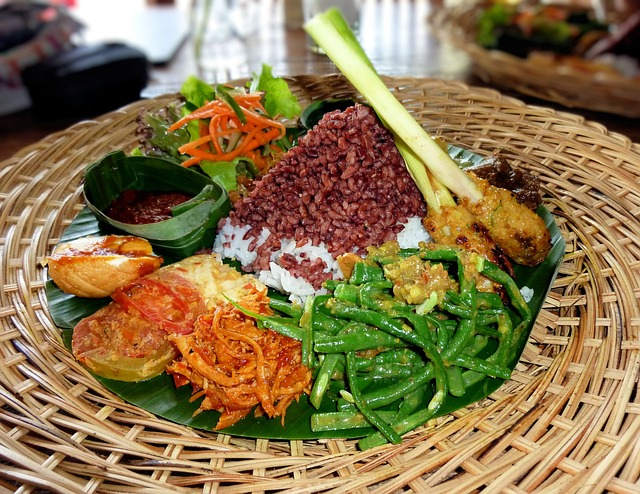

INDONESIE
| Capitale |
|---|
| Jakarta |
| Population |
|---|
| + de 270 millions d’habitants |
| Monnaie |
|---|
| Roupie indonésienne |
| Langue |
|---|
| Indonésien |
| Fête nationale |
|---|
| 17 août |
| Sites les + vus |
|---|
| Borobudur, Bromo, Bali, Kawah Ijen, Prambanan |
La beauté de l'Indonésie est à couper le souffle. Des plages de sable blanc aux volcans en activité, en passant par les forêts tropicales et les rizières en terrasses, ce pays est un véritable paradis de la nature. Les îles de Bali, Lombok, Komodo et Flores sont les plus connues, mais il y a tant d'autres endroits à découvrir. Les îles de Java et Sumatra avec des sites archéologiques et des volcans. Les îles de Sulawesi et de Bornéo avec des forêts tropicales et des plages de sable blanc, tout comme Raja Ampat et Sulawesi.


Un peu de geographie
L’Indonésie, pays situé entre l'océan Indien et le Pacifique, composé d'îles volcaniques est le plus grand archipel au monde. Constitué de plus de 17 000 îles, dont Java, Sumatra, Bornéo, Sulawesi et Bali, dont seulement 6 000 sont habitées. Notons qu'aujourd'hui, toutes les îles de l'archipel ne sont pas encore répertoriées dans leur intégralité et on estime le nombre total à environ 18 000 îles. Sa capitale Jakarta, dynamique et tentaculaire, se trouve sur l'île de Java.
Un peu d'histoire
Soekarno lit la proclamation d'indépendance.
L'Indonésie est un pays qui a connu de nombreuses invasions et conquêtes. Les premiers habitants de l'archipel sont les Papous, qui ont vécu sur les îles pendant des milliers d'années. Les premiers Européens à arriver en Indonésie sont les Portugais, qui ont établi des comptoirs commerciaux à Malacca et à Bantam. Les Hollandais ont ensuite pris le contrôle de l'archipel et ont établi leur capitale à Batavia (Jakarta). L'Indonésie a ensuite été occupée par les Japonais pendant la Seconde Guerre mondiale. Après la guerre, Anciennes «Indes néerlandaises», La République d'Indonésie nait le 17 août 1945 avec la proclamation de l'indépendance.
A noter qu'à cause de la surpopulation, les embouteillages, catastrophes naturelles à répétition : séismes, inondations, tsunamis, dus en grande partie au réchauffement climatique, Jakarta s’enfonce et c’est pour ces raisons que le 16 août 2019, le Président de la République Joko Widodo a annoncé le déménagement de la capitale vers un site à déterminer à Kalimantan Est, entre Balikpapan et Samarinda.
Un peu de culture
Tribue Manggarai
L'Indonésie est un pays très diversifié. Les Indonésiens sont majoritairement musulmans, mais il existe également des minorités chrétiennes, bouddhistes et hindouistes. La langue officielle de l'Indonésie est l'indonésien, mais il existe également plus de 700 langues et dialectes parlés dans le pays. L’Indonésie abrite des centaines de groupes ethniques parlant leurs propres langues. Le pays est connu pour ses plages, ses volcans, ses dragons de Komodo et ses jungles où vivent des éléphants, des orangs-outans et des tigres.
Plus grand pays musulman du monde, avec plus de 200 millions de musulmans (85% des Indonésiens), l'Etat indonésien reconnait cinq religions : l'islam, le protestantisme, le catholicisme, l'hindouisme et le bouddhisme. Il accorde également un statut au confucianisme, qui n'est pas à proprement parler une religion.
Un peu de tourisme
Les principales destinations touristiques de l'Indonésie sont Bali, Java, Sumatra, Bornéo, Sulawesi et les îles Gili. Les plages de Bali sont très populaires auprès des touristes. Les plages de Java sont également très populaires, notamment celles de Banyuwangi, de Malang et de Batu. Les plages de Sumatra sont également très populaires, notamment celles de Bukit Lawang, de Bukit Tinggi et de Bukit Merah. Les plages de Bornéo sont également très populaires, notamment celles de Tanjung Puting, de Tanjung Selor et de Tanjung Lesung. Les plages de Sulawesi sont également très populaires, notamment celles de Bunaken, de Manado et de Togean. Les plages des îles Gili sont également très populaires, notamment celles de Gili Trawangan, de Gili Meno et de Gili Air.
Bali
Un peu de gastronomie
La cuisine indonésienne est très variée et dépend de la région. Les plats les plus populaires sont le nasi goreng (riz frit), le sate (brochettes de viande), le gado-gado (salade de légumes), le rendang (viande cuite à la vapeur), le soto (soupe de poulet) et le bakso (boulettes de viande). 
La bakso (boulettes de viande)
Un peu de musique
La musique indonésienne est très variée et dépend de la région. Les musiques les plus populaires sont le dangdut (musique populaire indonésienne), le gamelan (musique traditionnelle indonésienne), le keroncong (musique populaire indonésienne), le pop (musique populaire indonésienne) et le rock (musique populaire indonésienne).
La musique Indonésienne
Quelques conseils
Alors qu’il est situé à proximité de l’équateur, c’est un pays qui est particulièrement chaud et tropical. On y distingue deux saisons bien différentes. La saison humide, de novembre à avril, plutôt rude et difficile à supporter, notamment au mois de décembre, une période pendant laquelle l’humidité atteint son sommet.
Même s’il est tout de même possible de découvrir l’Indonésie pendant cette période, il est conseillé plutôt de le faire pendant la saison sèche, de mai à octobre. Vous pourrez ainsi profiter d’un climat doux et agréable alors que les précipitations seront rares et auront donc peu de chances de venir gâcher vos visites et excursions.
Si vous en avez la possibilité, essayez même de partir en mai ou en septembre, des périodes pendant lesquels vous croiserez bien moins de touristes.
| Région | jan | fév | mar | avr | mai | juin | juil | aou | sep | oct | nov | dec |
|---|---|---|---|---|---|---|---|---|---|---|---|---|
Java-Bali-Lombok-Flores-Komodo |  |
|
|
|
|
|
|
|||||
Sumatra-Sulawesi-Kalimantan |  |
|
|
|
|
|
|
|||||
Raja Ampat | |
|
|
|
|
|
|
A ne pas rater
Les meilleures destinations touristiques en Indonésie
Lorsque vous vous rendez en Indonésie, il y a certains sites touristiques que vous ne devez absolument pas manquer. Voici donc les principaux d’entre eux.
La province de Kalimantan
L’île de Bornéo s’étend sur 3 pays, le Brunei, la Malaisie et l’Indonésie. La partie indonésienne porte le nom de Kalimantan. Le principal atout de la région est sa forêt tropicale, habitée de nombreux orangs outangs, espèce en voie de disparition. Le parc national de Tanjung Puting, classé réserve de biosphère par l’UNESCO, est le foyer de 6 000 singes asiatiques, comme les gibbons ou les orangs outangs. Dans cette région se trouvent les autochtones de la tribu Dayak, un peuple qui respecte de nombreuses traditions.


Le coût de la vie en Indonésie
Bien que le prix du billet d’avion soit assez élevé, il s’agit du plus gros investissement lors d’un voyage en Indonésie. En effet, pour un européen, le niveau de vie de l’Indonésie n’est pas très élevé. Cela vous permettra notamment de pouvoir profiter de luxe et d’excellentes prestations sans pour autant dépenser une fortune.
En effet, le coût de la vie en Indonésie est relativement bas. Vous pouvez ainsi vous loger dans un hôtel 3 étoiles pour moins de 50 euros par nuit. Vous pouvez également vous restaurer dans un restaurant de qualité moyenne pour moins de 10 euros. Enfin, vous pouvez vous déplacer en taxi pour moins de 2 euros. Toutefois, il faut noter que le coût de la vie peut varier en fonction de la région dans laquelle vous vous trouvez. Par exemple, le coût de la vie est plus élevé dans les grandes villes telles que Jakarta ou Bali.